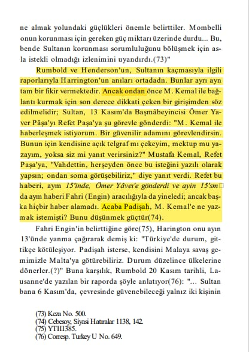
Sultan Vahideddinin Hicret etmeden Önce Mustafa Kemalle Görüşme talebi 📚 G.Jaeschke, Kurtuluş Savaşı ile ilgili İngiliz Belgeleri s.250
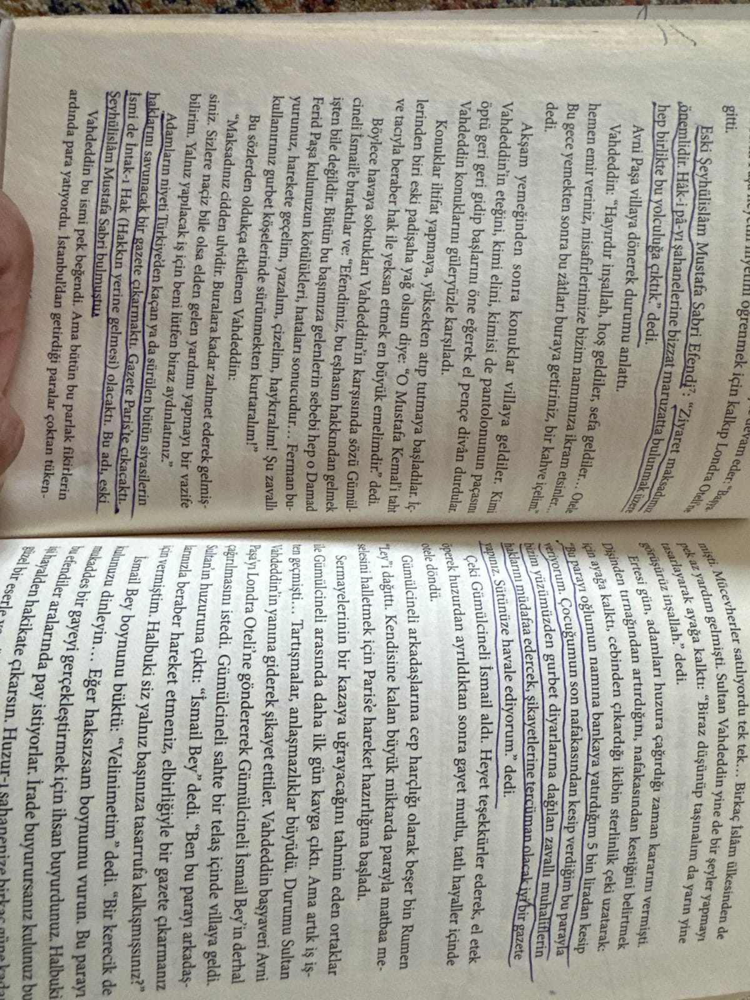
Sultan Vahideddinin Kendisini Suçlu hissedip 150 likler listesine haksız yere girenler için Propaganda yapmak istemesi 📚Vahideddin’in Sırdaşı Avni Paşa Anlatıyor, s.66-67
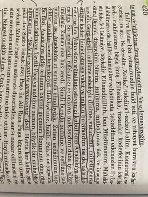
Sultan Vahideddinin San remodaki hatıralarında Neden Anadoluya gitmediğini açıklaması 📚 Şahbaba, s.420
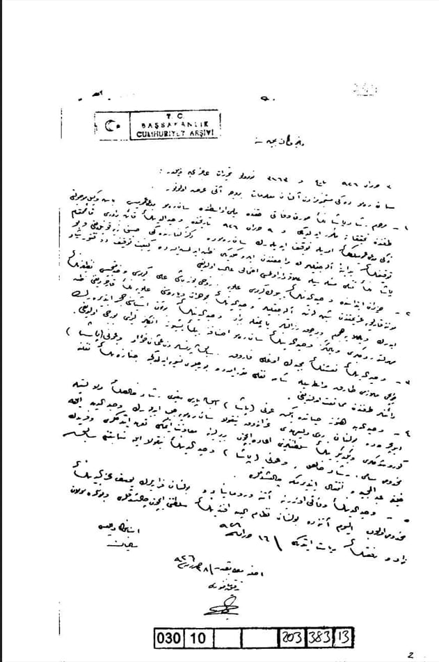
Reşat Paşa'nın ölümünün nedenini araştırmak için Sanremo savcısının görevlendirildiği, Vahdettin'in kayınbiraderi Zeki'nin tutuklandığı,Vahidettin'in borçları yüzünden eşyasına haciz konulduğu ve cenazesi hk.
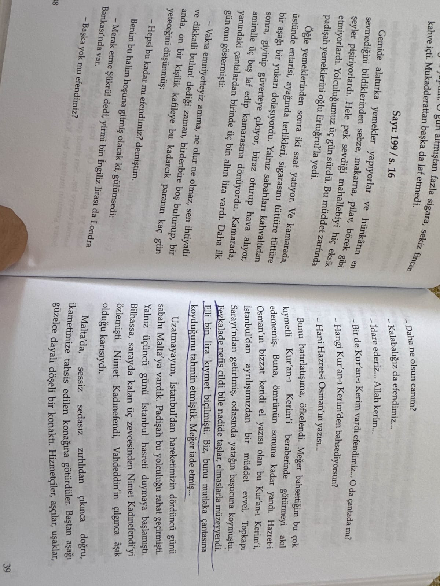
Sultan Vahideddin’in Elli bin lira olan Değerli taşlarla süslü kuran-ı kerimi Yanına Almayıp İade etmesi 📚Saraydaki Kayserili Şükrü Bey, s.38-39
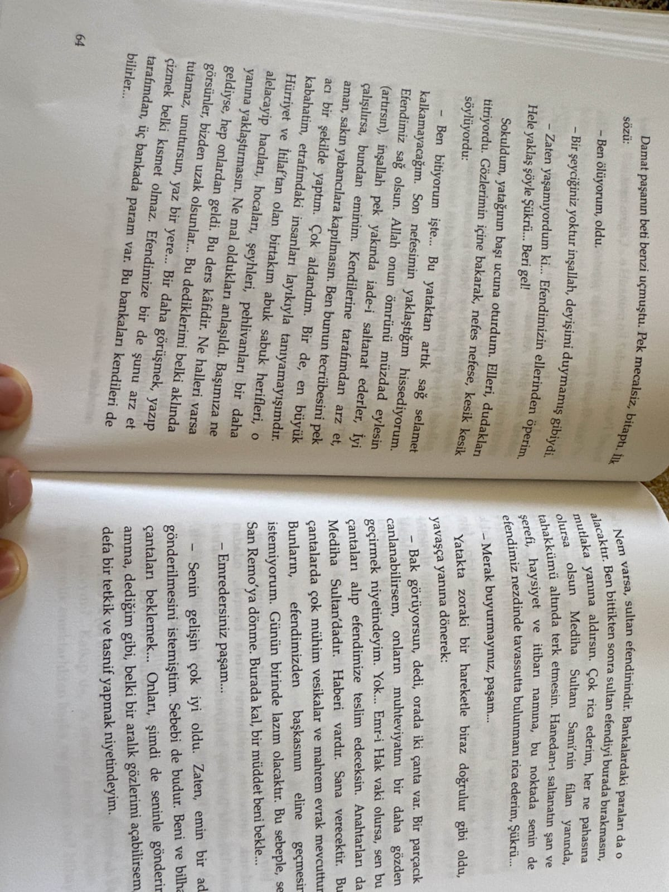
1.belgesi
Damat Ferid Paşanın Pişmanlıkları ve Vahideddine Vereceği Evrakların Üvey Oğlu Sami bey Tarafından El konulması 📚Saraydaki Kayserili Şükrü Bey, s.64-65-70-71
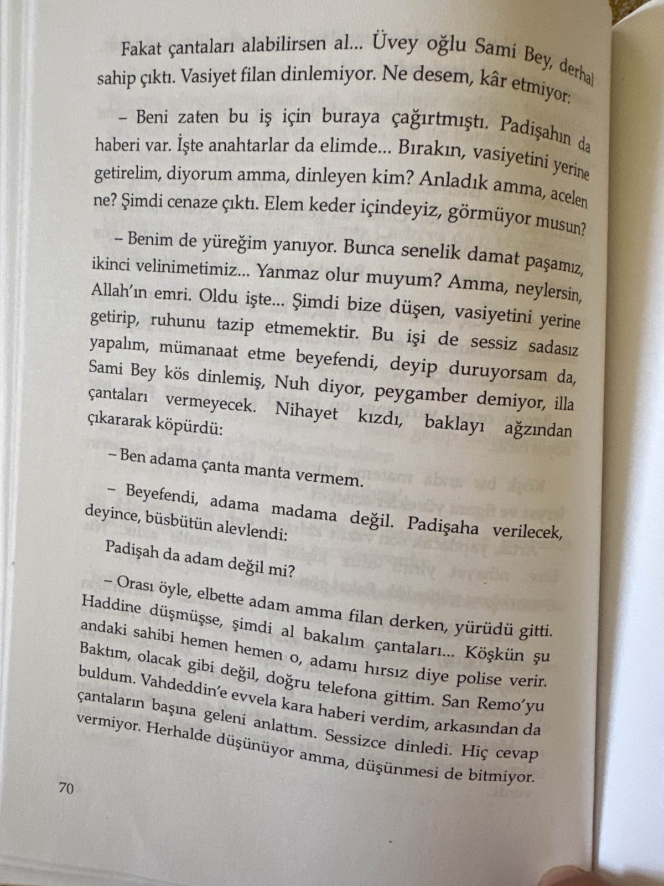
2.belgesi

3.belgesi

Şükrü Beyin Sultan Hamid’in İçki İçmediğini söylemesi Ve Sultan Abdülhamidin işret sofrasına icabet etmemesi 📚Saraydaki Kayserili Şükrü Bey, s.78

Halkımı maruz kaldıkları aşağılanma ve zulümler karşısında sakin tutmak zorlaşıyor. Oradaki adamlarımız onurlarını, hayatlarını ve evlerini kurtarmak için mücadele edecekler... Ben halkımın babasıyım ve... onları kurtarmaya çalışmalıyım.
📚 Gotthard_Jaeschke, Kurtuluş_Savaşında İngiliz_Belgeleri, s.91
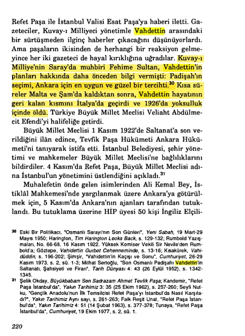
📚 Bilge Criss-İşgal Altında İstanbul 1918 -1923, s.220
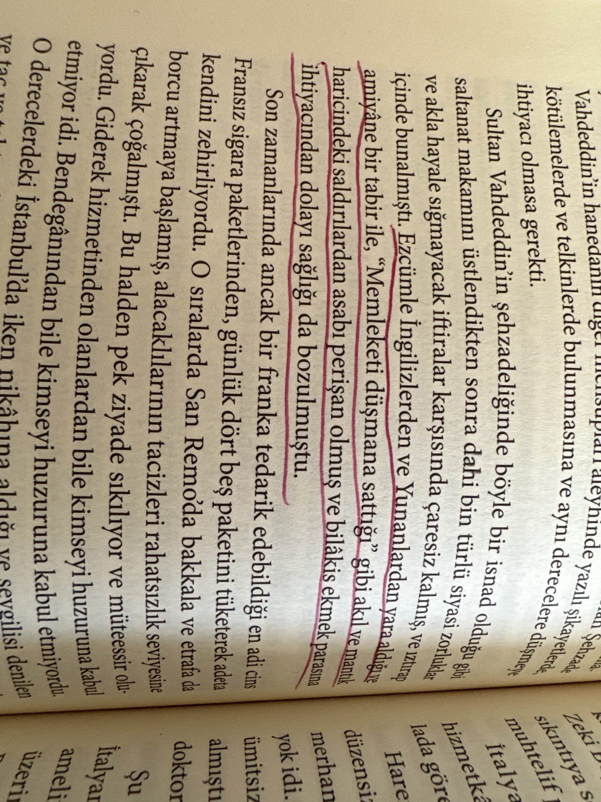
📌 *Sultan Vahideddin’in Memleketi sattı iftiralarından dolayı Hastalanması.* 📚 Vahideddin’in Sırdaşı Avni Paşa Anlatıyor, Osman Öndeş, s.342
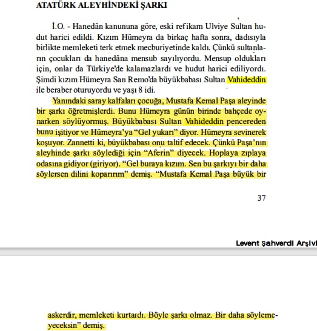
📌 *Sultan Vahideddinin Torunu Hümeyraya Mustafa Kemal Aleyhinde şarkı söylediği İçin Azarlaması veMustafa Kemali Takdir etmesi.* 📚 Arı İnan, Tarihe Tanıklık Edenler, s.37
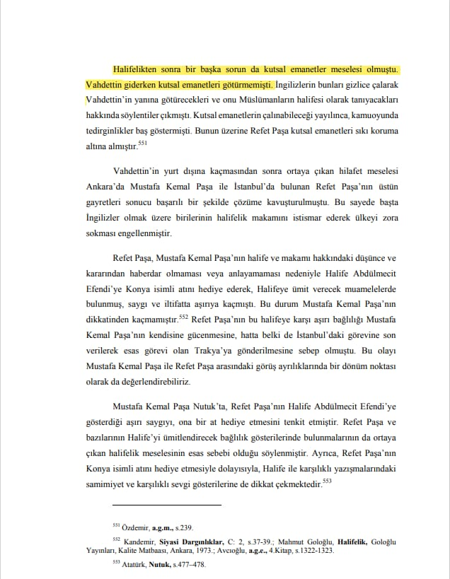
📚 Refet Bele’nin Askeri Ve Siyasi Hayatı 1881-1963, Aktaran: Halit Kaya, s.126 📌 **Sultan Vahideddinin Kutsal Emanetleri İstanbulda Bırakması. **
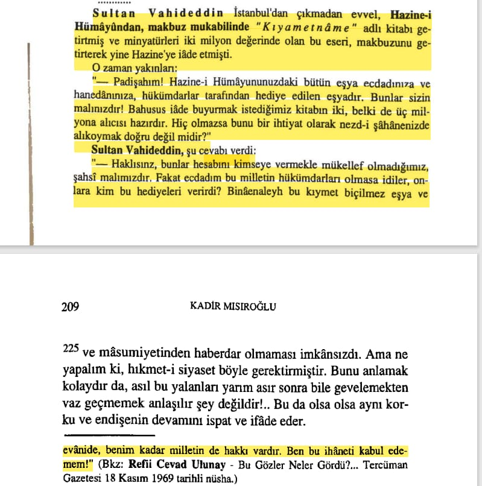
📚 Kadir Mısıroğlu, Geçmişi ve Geleceği ile Hilafet, s.209 bkz. Refii Cevad Ulunay, Bu Gözler Neler Gördü, s.42
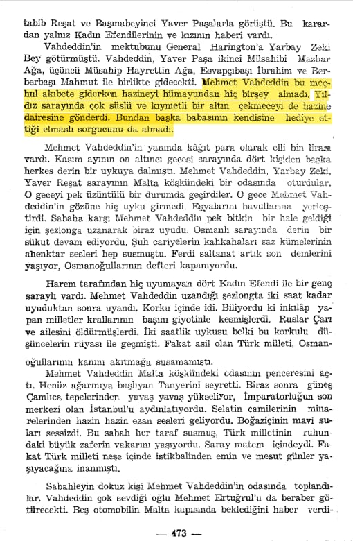